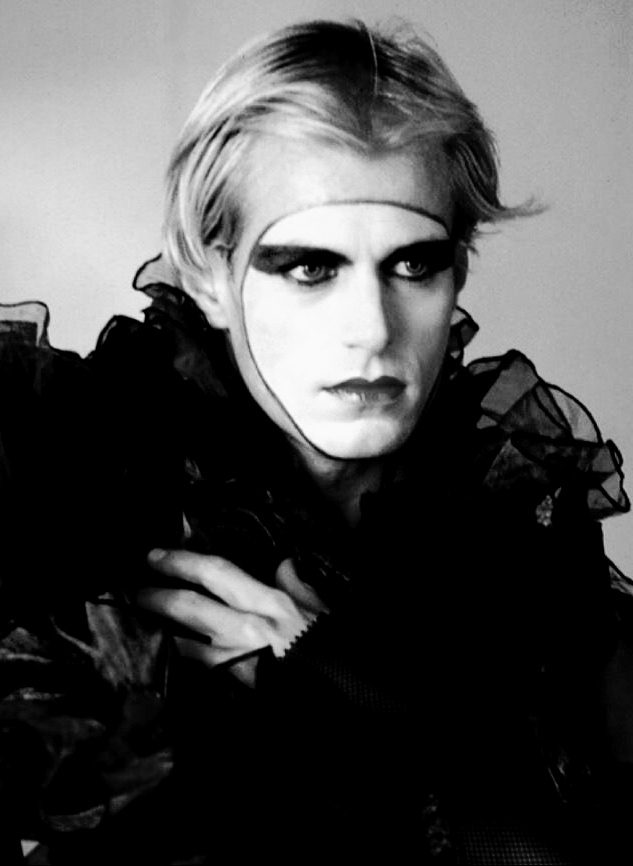
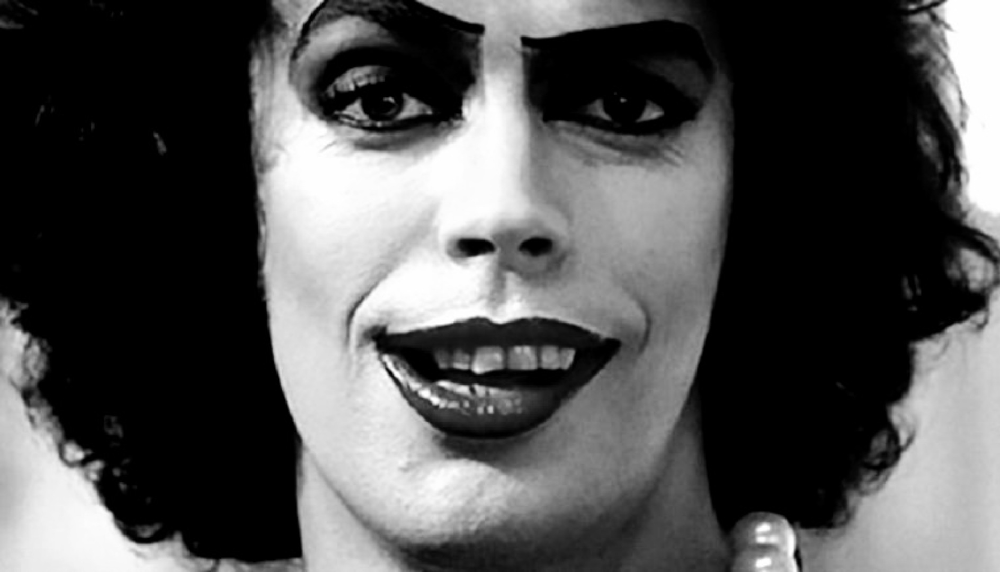

.jpg)
The film was shot at Bray Studios and Oakley Court, a country house near Maidenhead, Berkshire, England, and at Elstree Studios for post-production, from 21 October to 19 December 1974. Oakley Court, built in 1857 in the Victorian Gothic style, is known for a number of Hammer films. Much of the location shooting took place there, although at the time the manor was not in good condition. Much of the cast were from the original London stage production, including Tim Curry, who had decided that Dr Frank N. Furter should speak like the Queen of the United Kingdom, extravagantly posh. Fox insisted on casting the two characters of Brad and Janet with American actors, Barry Bostwick and Susan Sarandon. Filming took place during autumn, which made conditions worse. During filming, Sarandon fell ill with pneumonia. Filming of the laboratory scene and the title character's creation occurred on 30 October 1974.
The film is both a parody and tribute to many of the science fiction and horror movies from the 1930s up to the 1970s. The film production retains many aspects from the stage version such as production design and music, but adds new scenes not featured in the original stage play. The film's plot, setting, and style echo those of the Hammer horror films, which had their own instantly recognizable style (just as Universal Studios' horror films did). The originally proposed opening sequence was to contain clips of various films mentioned in the lyrics, as well as the first few sequences shot in black and white, but this was deemed too expensive and scrapped.
On a wild and rain-swept late-November evening, somewhere at an empty stretch of road outside Ohio's merry Denton, blissfully-affianced, prudish, boringly-innocent young pair Brad Majors (Barry Bostwick) and Janet Weiss (Susan Sarandon) find themselves stranded on their way to visit an ex-tutor.
Instead, the couple will inadvertently unearth the cross-dressing Dr. Frank-N-Furter's (Tim Curry's) spooky lair of inexhaustible oddities, just in time to partake in the out-of-this-world mad scientist's proud unveiling of his latest, delightfully extravagant, most daring creation: the ultimate male and the perfect sex symbol: the flaxen-haired Rocky Horror (Peter Hinwood).
But, little by little, as the effervescent transgressive force gobbles up whole the unsuspecting visitors of the night, Brad and Janet slowly begin to embrace the potent fascinations of seduction, while an idolized Rocky roams free in the mansion. Who can interrupt man's union with the absolute pleasure?
